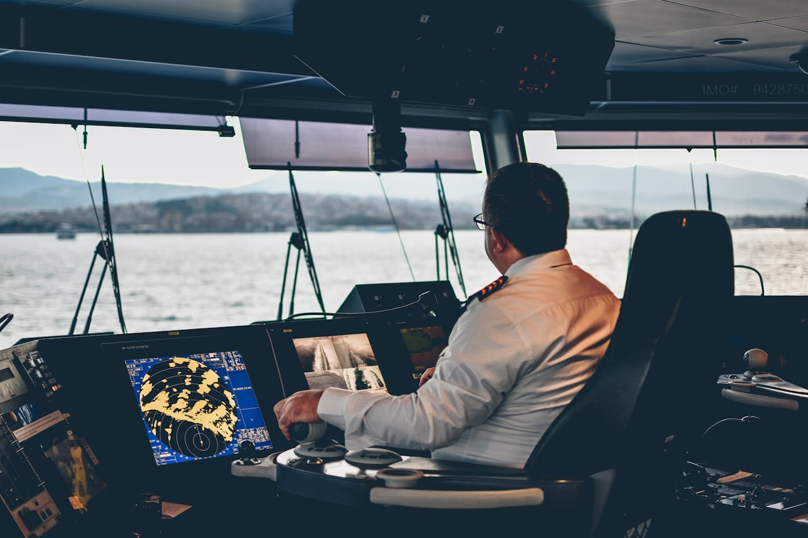

PICsINC
Getting started is easy. Request our services on the website and fill out the required information to let us find you, and know what the issue is. We’ll come with the rest, and you’ll find yourself with one less problem to worry about in your preparations for deployment.

What information do we need from you?
In order to request our services, a little bit of information is required so we know how to help you, and who to talk to so we know what your issue is, or can ask to have the problem clarified. You will need to provide your name, rank is optional, you need to provide your ship hull number, what base you’re stationed at (and moored), a description of what your issue is, where in the ship your issue is, and what the symptoms of the problem are. Once we have all this information, we will know what and where the problem is, where and how we can contact you for questions of clarification, and we’ll be able to handle the rest.
With every one of us here at PICsINC having prior naval experience, we understand how vital it is to get the wet stuff on the hot stuff as soon as possible, and so we specialize in repairing all equipment that will be instrumental in getting knowledge of the fire to you as soon as possible, and the equipment that will facilitate the communications required to get you to the fire as soon as possible. You've got a ship to save, after all.